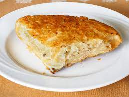

burek

decription
from wikipedia: "Börek or burek are a family of pastries or pies found in the Balkans, Middle East and Central Asia. The pastry is made of a thin flaky dough such as filo with a variety of fillings, such as meat, cheese, spinach, or potatoes. Boreks are mainly associated with Anatolia, the Middle East, Armenia, and also with the former Ottoman Empire, including the Balkans and the South Caucasus, Eastern European and Central European countries, Northern Africa and Central Asia. A borek may be prepared in a large pan and cut into portions after baking, or as individual pastries. They are usually baked but some varieties can be fried. Borek is sometimes sprinkled with sesame or nigella seeds, and it can be served hot or cold."
ingredients
- 1 cup feta cheese
- 1 cup sour cream
- 1 cup cottage cheese
- 8 ounces cream cheese
- 2 eggs
- 8 ounces phyllo dough
- 1 cup milk
- 1 cup vegetable oil
directions
- preheat oven to 400 degrees farenheit or 200 degrees celcius
- mix feta cheese, sour cream, cottage cheese, cream cheese, and eggs together in a bowl
- whisk milk and oil together in a small bowl
- brush milk-oil mixture over 3 sheets of phyllo dough and stack together
- place some of the cheese mixture in a striaght line on one end of the dough
- roll up tightly to form a spiral shape
- transfer spiral to the baking sheet
- repeat with remaining milk-oil mixture, phyllo dough, and cheese mixture
- grease a baking sheet lightly
- bake burek in the preheated oven until golden brown, about 40 minutes
recipe taken from here